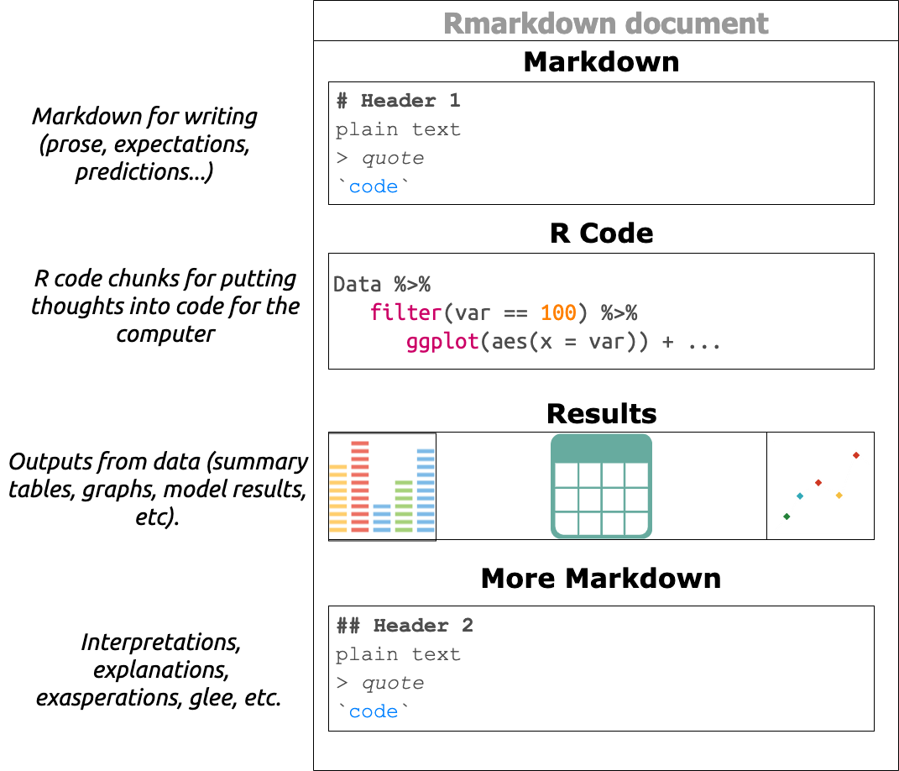

Markdown
Markdown files (.md) are common type of plain text files. Markdown is a ‘lightweight markup language,’ which means it’s easy for humans to read, and computers can convert it to HyperText Markup Language (HTML). Markdown allows for some formatting options to aid with communication (see below)
<!-- comments -->
normal text
*italic*
**bold**
> quote
`code`
# h1
## h2
### h3
#### h4
##### h5
###### h6To learn more, see Markdown Syntax Documentation on John Gruber’s site.
Why learn markdown?
I recommend learning markdown before any other programming language because it’s the lingua franca for asking code related questions on the internet. See Stackoverflow, RStudio community, Reddit, Github, and many other guidelines for posting questions.
Rmarkdown
RStudio has an extension of markdown, RMarkdown. Using RMarkdown in RStudio allows for a genuinely reproducible workflow: we’re able to write our thoughts, code, display results, and then share everything in multiple outputs.

How does it work? Follow the steps below and copy + paste the code into your Rmarkdown document. Then click on the Knit icon.

# R Markdown
Load the `tidyverse`.
```r
library(tidyverse)
tidyverse::tidyverse_logo()
```
### Code
When you click the **Knit** button a document will be generated that includes text content, code inputs, and various outputs.
```r
ggplot2::diamonds %>% dplyr::glimpse(78)
```
### Graphs
You can also include graphs.
```r
diamonds %>%
ggplot2::ggplot(aes(x = carat, y = price, color = cut)) +
ggplot2::geom_point()
```Below is what you should see in your .html document: